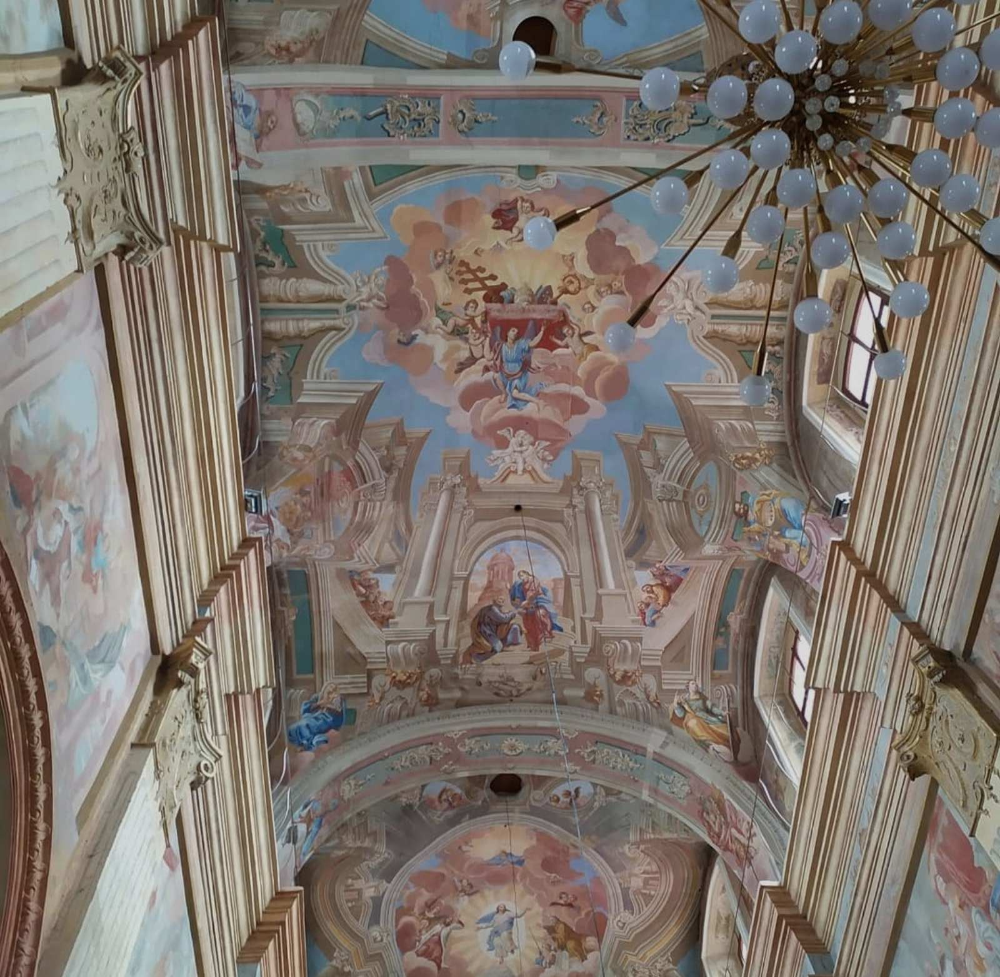
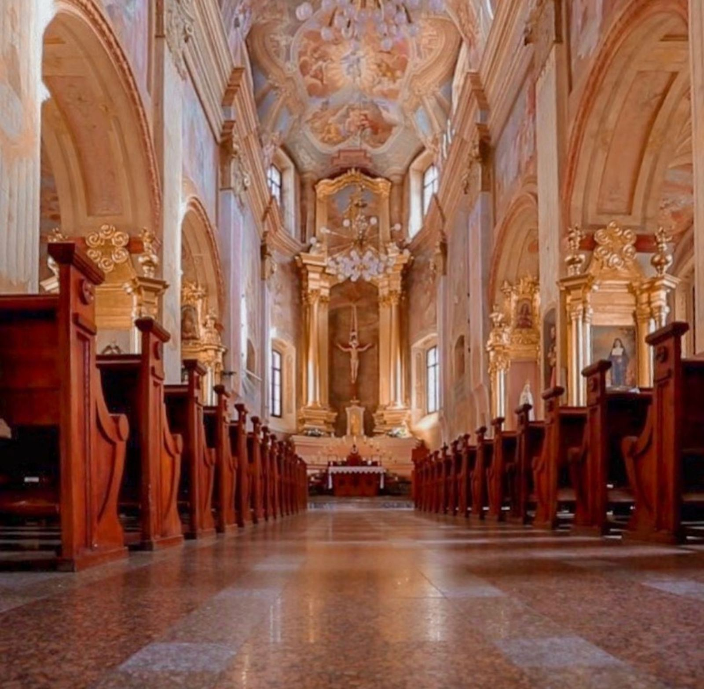
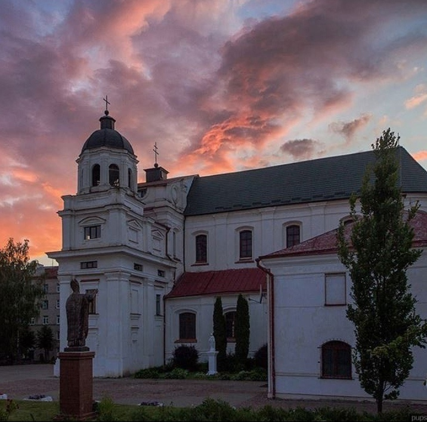
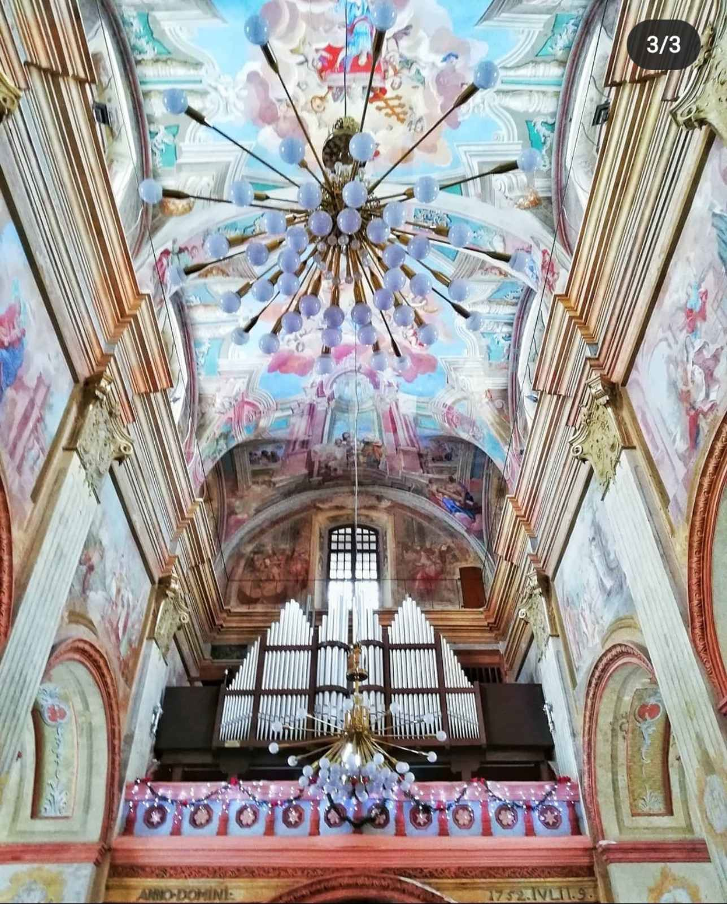
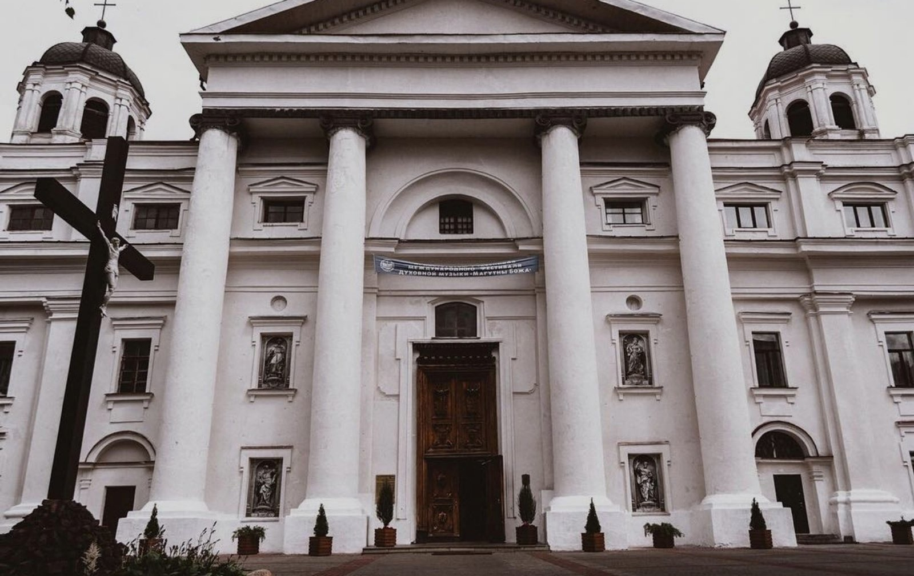

Костёл Святого Станислава (бывший Собор Успения Девы Марии, Собор Успения Девы Марии и Святого Станислава ) — католический собор в Могилёве. Одна из главный архитектурных ценностей Беларуси. Носит статус сокафедрального собора Минско-Могилёвского архидиоцеза. Памятник архитектуры в стиле барокко, построен в 1738—1752 годах. Дата основания 1738год. Костёл стоит на месте бывшего монастыря кармелитов. В 1636 году на территории монастыря была построена деревянная церковь, освящённая во имя Успения Пресвятой Девы Марии. В 1708 году во время большого пожара эта церковь сгорела, а на её месте в 1738—1752 годах велось строительство каменного храма. Новый храм кармелитского монастыря был освящён в 1765 г. виленским епископом Ф. Зенковичем. 25 декабря 1772 года Екатерина II объявила о создании в Российской империи католической Белорусской епархии с центром в Могилёве. Десятью годами позже Белорусская епархия была преобразована в Могилёвскую архиепархию, которой подчинялись все католические приходы латинского обряда в России (в том числе в Москве и Санкт-Петербурге). С 1783 года храм кармелитского монастыря стал кафедральным собором могилёвской архиепархии. Поскольку покровителем собора считался святой Станислав собор называли как собором Успения, так и собором святого Станислава. В конце XVIII столетия собор был перестроен, в частности, к фасаду был пристроен 4-колонный портик. Фрески на сводах выполнены во второй половине XVIII века группой могилевских художников (А. Главацкий, Петр, Лукьян и Григорий) под руководством Павла Пиотровского. Особенностью интерьера является то, что здесь сохранился один из наиболее полных и профессиональных евангельских циклов Беларуси. В 1956 году собор был закрыт, в нём разместился Центральный исторический архив БССР. В этот период храм утратил часть росписей, был безвозвратно утерян орган с редкими керамическими трубами. В начале 1990-х годов здание собора возвращено верующим, реставрация шла вплоть до 1994 года. Собор получил статус сокафедрального в образованной в 1991 году Минско-Могилёвской архиепархии. С 1993 года собор Успения служит одним из центром ежегодного фестиваля духовной музыки «МагутныБожа», проводимого в Могилёве.